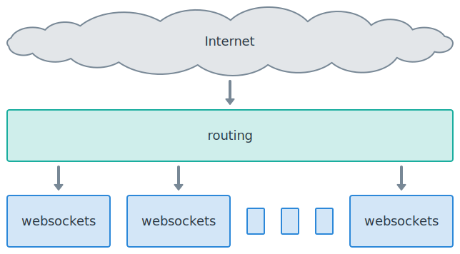

Deployment¶
When you deploy your websockets server to production, at a high level, your architecture will almost certainly look like the following diagram:
The basic unit for scaling a websockets server is “one server process”. Each blue box in the diagram represents one server process.
There’s more variation in routing. While the routing layer is shown as one big box, it is likely to involve several subsystems.
When you design a deployment, your should consider two questions:
How will I run the appropriate number of server processes?
How will I route incoming connections to these processes?
These questions are strongly related. There’s a wide range of acceptable answers, depending on your goals and your constraints.
You can find a few concrete examples in the deployment how-to guides.
Running server processes¶
How many processes do I need?¶
Typically, one server process will manage a few hundreds or thousands connections, depending on the frequency of messages and the amount of work they require.
CPU and memory usage increase with the number of connections to the server.
Often CPU is the limiting factor. If a server process goes to 100% CPU, then you reached the limit. How much headroom you want to keep is up to you.
Once you know how many connections a server process can manage and how many connections you need to handle, you can calculate how many processes to run.
You can also automate this calculation by configuring an autoscaler to keep CPU usage or connection count within acceptable limits.
Don’t scale with threads. Threads doesn’t make sense for a server built with
asyncio.
How do I run processes?¶
Most solutions for running multiple instances of a server process fall into one of these three buckets:
Running N processes on a platform:
a Kubernetes Deployment
its equivalent on a Platform as a Service provider
Running N servers:
an AWS Auto Scaling group, a GCP Managed instance group, etc.
a fixed set of long-lived servers
Running N processes on a server:
preferably via a process manager or supervisor
Option 1 is easiest of you have access to such a platform.
Option 2 almost always combines with option 3.
How do I start a process?¶
Run a Python program that invokes serve(). That’s it.
Don’t run an ASGI server such as Uvicorn, Hypercorn, or Daphne. They’re alternatives to websockets, not complements.
Don’t run a WSGI server such as Gunicorn, Waitress, or mod_wsgi. They aren’t designed to run WebSocket applications.
Applications servers handle network connections and expose a Python API. You don’t need one because websockets handles network connections directly.
How do I stop a process?¶
Process managers send the SIGTERM signal to terminate processes. Catch this signal and exit the server to ensure a graceful shutdown.
Here’s an example:
#!/usr/bin/env python
import asyncio
import signal
from websockets.asyncio.server import serve
async def echo(websocket):
async for message in websocket:
await websocket.send(message)
async def server():
# Set the stop condition when receiving SIGTERM.
loop = asyncio.get_running_loop()
stop = loop.create_future()
loop.add_signal_handler(signal.SIGTERM, stop.set_result, None)
async with serve(echo, "localhost", 8765):
await stop
asyncio.run(server())
When exiting the context manager, serve() closes all
connections
with code 1001 (going away). As a consequence:
If the connection handler is awaiting
recv(), it receives aConnectionClosedOKexception. It can catch the exception and clean up before exiting.Otherwise, it should be waiting on
wait_closed(), so it can receive theConnectionClosedOKexception and exit.
This example is easily adapted to handle other signals.
If you override the default signal handler for SIGINT, which raises
KeyboardInterrupt, be aware that you won’t be able to interrupt a
program with Ctrl-C anymore when it’s stuck in a loop.
Routing connections¶
What does routing involve?¶
Since the routing layer is directly exposed to the Internet, it should provide appropriate protection against threats ranging from Internet background noise to targeted attacks.
You should always secure WebSocket connections with TLS. Since the routing layer carries the public domain name, it should terminate TLS connections.
Finally, it must route connections to the server processes, balancing new connections across them.
How do I route connections?¶
Here are typical solutions for load balancing, matched to ways of running processes:
If you’re running on a platform, it comes with a routing layer:
a Kubernetes Ingress and Service
a service mesh: Istio, Consul, Linkerd, etc.
the routing mesh of a Platform as a Service
If you’re running N servers, you may load balance with:
a cloud load balancer: AWS Elastic Load Balancing, GCP Cloud Load Balancing, etc.
A software load balancer: HAProxy, NGINX, etc.
If you’re running N processes on a server, you may load balance with:
A software load balancer: HAProxy, NGINX, etc.
The operating system — all processes listen on the same port
You may trust the load balancer to handle encryption and to provide security. You may add another layer in front of the load balancer for these purposes.
There are many possibilities. Don’t add layers that you don’t need, though.
How do I implement a health check?¶
Load balancers need a way to check whether server processes are up and running to avoid routing connections to a non-functional backend.
websockets provide minimal support for responding to HTTP requests with the
process_request hook.
Here’s an example:
#!/usr/bin/env python
import asyncio
from http import HTTPStatus
from websockets.asyncio.server import serve
def health_check(connection, request):
if request.path == "/healthz":
return connection.respond(HTTPStatus.OK, "OK\n")
async def echo(websocket):
async for message in websocket:
await websocket.send(message)
async def main():
async with serve(echo, "localhost", 8765, process_request=health_check):
await asyncio.get_running_loop().create_future() # run forever
asyncio.run(main())